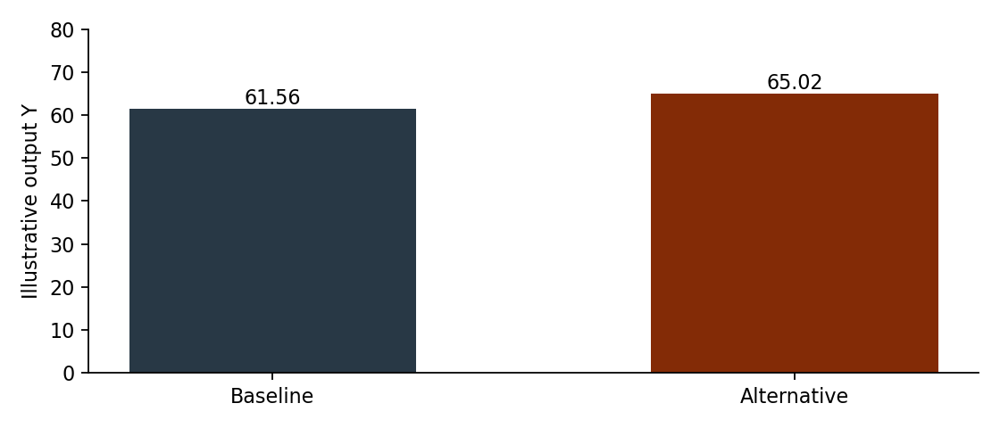
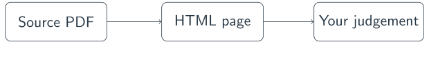

A small economic research deck
An example to convert and check
2 October 2026
Model and evidence
- Human review
A production function
Output depends on capital and labour:
\[ \econOutput = A K^{\alpha} L^{1-\alpha} \tag{1} \]
- For this example, \( A=1 \) and \( \alpha=0.3 \).
- Equation (1) is an illustration, not an estimated relationship.
| Scenario | Capital \( K \) | Labour \( L \) |
|---|---|---|
| Baseline | 100 | 50 |
| Alternative | 120 | 50 |
Illustrative output

Source: invented teaching values; no empirical claim. See Workshop example [2026].
- Model and evidence
Human review
Check the conversion

- Compare maths, figures, tables and slide order.
- Change one conversion rule; rerun and check again.
Speaker notes
The diagram can be rendered from the PDF if it cannot be converted directly.
References
- Workshop example. Illustrative teaching data, 2026. Invented values for a conversion exercise; not empirical evidence.